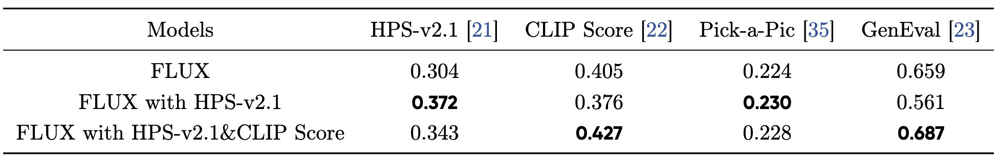

More Visualization on Text-to-Image Generation.
Recent advances in generative AI have revolutionized visual content creation, yet aligning model outputs with human preferences remains a critical challenge. While Reinforcement Learning (RL) has emerged as a promising approach for fine-tuning generative models, existing methods like DDPO and DPOK face fundamental limitations - particularly their inability to maintain stable optimization when scaling to large and diverse prompt sets, severely restricting their practical utility. This paper presents DanceGRPO, a framework that addresses these limitations through an innovative adaptation of Group Relative Policy Optimization (GRPO) for visual generation tasks. Our key insight is that GRPO's inherent stability mechanisms uniquely position it to overcome the optimization challenges that plague prior RL-based approaches on visual generation. DanceGRPO establishes several significant advances: First, it demonstrates consistent and stable policy optimization across multiple modern generative paradigms, including both diffusion models and rectified flows. Second, it maintains robust performance when scaling to complex, real-world scenarios encompassing three key tasks and four foundation models. Third, it shows remarkable versatility in optimizing for diverse human preferences as captured by five distinct reward models assessing image/video aesthetics, text-image alignment, video motion quality, and binary feedback. Our comprehensive experiments reveal that DanceGRPO outperforms baseline methods by up to 181% across multiple established benchmarks, including HPS-v2.1, CLIP Score, VideoAlign, and GenEval. Our results establish DanceGRPO as a robust and versatile solution for scaling Reinforcement Learning from Human Feedback (RLHF) tasks in visual generation, offering new insights into harmonizing reinforcement learning and visual synthesis.
This table presents the performance of three Stable Diffusion variants: (1) the base model, (2) the model trained with HPS score, and (3) the model optimized with both HPS and CLIP scores. For evaluation, we report HPS-v2.1 and GenEval scores using their official prompts, while CLIP score and Pick-a-Pic metrics are computed on our test set of 1,000 prompts.
In this table, we show the results of FLUX, FLUX trained with HPS score, and FLUX trained with both HPS score and CLIP score.
In this table, we show the results of HunyuanVideo on Videoalign and VisionReward trained with VideoAlign VQ&MQ. "Baseline" denotes the original results of HunyuanVideo. We use the probability version of VisionReward.
We visualize the reward curves of Stable Diffusion, FLUX.1-dev, and HunyuanVideo-T2I on HPS score from left to right. After applying CLIP score, the HPS score decreases, but the generated images become more natural.
We visualize the training curves of motion quality&visual quality on HunyuanVideo, motion quality on SkyReel-I2V.
(a) Thresholding Binary Reward employs a binary mechanism, where rewards are discretized via a fixed threshold (values exceeding the threshold receive 1, others 0), specifically designed to evaluate generative models’ ability to learn abrupt reward distributions under threshold-based optimization. (b) By training the model on subsets of 16 samples selected from progressively larger pools (16, 64, and 256 samples per prompt), we evaluate the impact of sample curation on convergence dynamics about the stable diffusion.
We show the human evaluation results using FLUX (T2I), HunyuanVideo (T2V), and SkyReel (I2V), respectively. Human artists consistently prefer outputs refined with RLHF.
We visualize the results by selecting FLUX optimized with the HPS score at iterations 0, 60, 120, 180, 240, and 300. The optimized outputs tend to exhibit brighter tones and richer details.
Visualization of the diversity of the model before and after RLHF. Different seed tends to generate similar images after RLHF.
This figure demonstrates the impact of CLIP score. The prompt is "A photo of cup". We find the model trained solely with HPS-v2.1 rewards tend to produce unnatural ("oily") outputs, while incorporating CLIP scores helps maintain more natural image characteristics.
Prompt: Tobuscus wearing a green shirt, gliding through the sky on magic shoes.
Prompt: realistic scene 4k HD angels in unique armor with gems and gold white on it with huge wings fighting among themselves.
Prompt: the feeling of a mirage in a house, the sunset shining on the lake surface, and the water flowing slowly.
Prompt: woman running down a dimly lit corridor.
Prompt: a young black girl walking down a street with alot of huge trees.
Prompt: pencil shavings dancing on a black table.